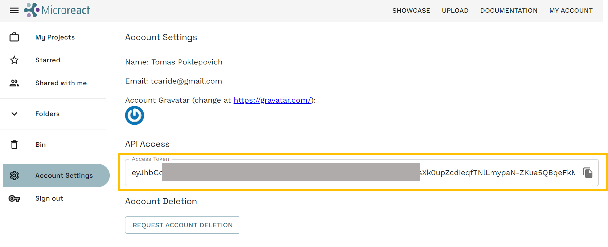

Genomic Epidemiology for Outbreak Investigation
Web tools for genomic epidemiology
Based on a exercise developed by Julio Diaz Caballero & Caterina Guzmán Verri for the Genomic Epidemiology course, Costa Rica, 2025
Background
Genomic epidemiology aims to understand the emergence and dissemination of high-risk clones within pathogen populations with the ultimate goal of implementing evidence-based interventions to protect public health. High-risk clones are subpopulations/strains/variants of a pathogen that carry risk elements, such as antibiotic resistance or virulence determinants, and thus pose a potential risk to public health.
The increased genetic resolution afforded by genomic data is useful from global to local geographic scales, and has proven to be particularly useful for the investigation of pathogens that exhibit little genetic variation (e.g. Wong et al. 2016), and for outbreak investigations (e.g. Hendriksen et al. 2011, Eppinger et al. 2014). During outbreak investigations (and other genomic epidemiology studies), epidemiological data from patients is collected by healthcare professionals. Antimicrobial susceptibility data, species identification, and any further phenotypic or molecular characterization of the isolates is often generated by the laboratories linked to healthcare facilities and/or by the reference laboratory. Ideally, these different sources of data are stored in a centralised surveillance system and database, such as WHONET. However, these systems rarely incorporate genomic data produced by bioinformaticians. Genomic data may include sequence/assembly quality, genotyping/genoserotyping information, presence/absence of known risk elements, and clustering of the isolates based on genetic similarity –usually in the form of a phylogenetic tree or a minimum spanning-tree.
The job of a genomic epidemiologist often starts by combining data from diverse sources that might not be complete or standardised to facilitate the identification of relevant patterns for meaningful interpretation. Once integrated, the epi, lab, and genomic data can be interrogated over the structure of the tree to identify clusters of interest that will place the isolates in or out of the outbreak.
The Centre for Genomic Pathogen Surveillance develops free web applications for data collection, integration, visualisation, and analysis of genomic epidemiology data. Epicollect5 is a mobile & web application for free and easy data collection. It provides both the web and mobile applications for the generation of forms (questionnaires) and freely hosted project websites for data collection. Projects are created by using the web application at five.epicollect.net, and then downloaded to the device to perform the data collection. Data are collected in the field using multiple devices and all data can be viewed on a central server (via map, tables, and charts). Data-flo is a system for customised integration and manipulation of diverse data via a simple drag and drop interface. Data-flo provides a visual method to design a reusable pipeline to integrate, clean, and manipulate data in a multitude of ways, eliminating the need for continuous manual intervention (e.g., coding, formatting, spreadsheet formulas, manual copy-pasting). Microreact allows you to upload, visualise and explore any combination of clustering (trees), geographic (map) and temporal (timeline) data. Other metadata variables are displayed in a table. You can specify colours and/or shapes to display on the map, tree and/or timeline. A permanent URL is produced for you to share your Microreact.
Introduction
Aim: To use web and mobile tools for the collection of epi data in the field, integrate epi data with lab and bioinformatics data, and visualise all data together to investigate a putative outbreak.
Note: This exercise is a work of fiction. Any resemblance to a real life situation is purely coincidental.
During August and September 2025, Klebsiella pneumoniae was isolated from clinical samples of 34 patients at several hospitals and clinics in and around Cluj-Napoca. Approximately half of the patients had presented with urinary tract infections (UTIs) although a variety of other infection types were seen including three sepsis cases. One colony from each confirmed case was sequenced on an Illumina MiSeq. An epidemiological investigation revealed that some of the culture-confirmed cases were students at Cluj-Napoca Institute of Coffee (CIC). This suggested that the campus may be the central point of transmission in this outbreak. The epidemiological and demographic data is summarised in the file epi_data.csv.
Following the confirmation of the 34 positive cases of K. pneumoniae ST258 infections, the management of CIC denied that the Klebsiella pneumoniae could have spread within the campus and declared that deep cleaning of the was taking place regularly.
A team of disease detectives will be deployed around CIC today to investigate the possibility of environmental contamination of K. pneumoniae within the campus, using tools such as data-flo, Pathogenwatch, and Microreact, free web applications developed by the Centre for Genomic Pathogen Surveillance for easy data analyses, integration and visualisation.
Objectives
At the end of this session the participants will be able to:
- Analyse genomes using PathogenWatch
- Merge epidemiological, laboratory and genomic data with data-flo
- Create a Microreact project to visualise epidemiological, laboratory and genomic data
In the first phase of the outbreak investigation, disease detectives collected water samples from around the CIC campus. These were sent to a reference lab for further analysis.
Analyse genomes with PathogenWatch
The reference lab has sent you the culture results in an Excel file called (lab_results.xlsx). The lab reported that 2 out of 13 water samples from the CIC campus were positive for K. pneumoniae. This immediately prompted the closure of the 2 water sources and internal investigation.
Does this confirm that the source of the outbreak can be found in the campus of CIC?
One colony from each source was sequenced on Illumina MiSeq by the reference lab and the bioinformatics team has assembled each of them.
We will use https://pathogen.watch to identify the sequence type (ST) of these genomes using the Pasteur scheme.
Click on the upload link at the top right
Click on Single Genome FASTAs

Drag and Drop provided fasta files (file1 and file2) into the browser and wait for analysis to finish
Click on VIEW GENOMES
Select the two analysed genomes
Click on Selected Genomes
Click on Download data
Click on MLST (Pasteur). This will download a csv file with the results.
You should now be able to find the mlst-Pasteur.csv in your Downloads folder.
Merge data with Data-flo
https://data-flo.io/
Note: you need to sign-up for data-flo and Microreact. Creating your own account will allow you to manage and edit your projects.
A maximum likelihood phylogenetic tree (tree.nwk) was inferred from the genomes of the 34 clinical samples and 2 environmental (water) samples. Six genomes from a previous outbreak (Mar-Apr 2022) were also included in the tree inference and their associated data added to the epi_data.csv file.
The disease detectives now have the information needed for the investigation in the following formats:
epi_data.csvEpi data from 34 clinical cases and 6 cases from previous outbreakepi_data_new.csvMetadata of 2 positive water sources from the CIC campuslab_results.xlsxCulture and serotyping results for all the samples from the CIC campusmlst-Pasteur.csvMLST results from PathogenWatchtree.nwkPhylogenetic tree of 34 clinical cases, 2 culture-positive water samples, and 6 cases from previous outbreak
The files are located in this link.
We will combine data from these different sources with a data-flo workflow that takes the files above as input, and creates as an output a Microreact project where the data can be visualised.
Open the data-flo workflow (https://www.data-flo.io/editor/ai9jZdWD5KBoVDzuAaYCub)
Copy the workflow to your own dataflo account.
This will open a copy of this workflow in your dataflo account.
On a different browser tab, get your microreact API access token at https://microreact.org/my-account/settings (you must already have created your microreact account).

Edit the workflow to include your own microreact API access token.
- Click on
*access tokenin theCreate microreact projectbox - From the options on the right, select
Bind to value - Paste your
API access tokenin theVALUEbox
Now lets go to the implementation page by clicking on the RUN option.
Click on Run. The Outputs box now shows the url of a Microreact project created by data-flo.
Before you open the Microreact project answer the following questions:
- If later on we wanted to add additional entries (i.e. water samples from CIC) , could we use the same data-flo? If so, how would this be beneficial?
- Do you use/know of any other methods to join data? If so, how do they compare with data-flo?
Explore phylogenetic and epidemiological data with Microreact
https://microreact.org/
Open the Microreact link in the output from data-flo. It should look something like this:
Now change the colour column to “Hospital”. Click on the eye icon at the top right of the page. Select “Hospital from the Colour Column dropdown list.
Scale the markers on the map by clicking on the sliders icon, then in the opening options click on Markers. Finally, toggle the Scale markers option on.

Answer the following questions:
- What do the markers on the map represent?
- Which hospital reported the index (first) case? Tip: Click on the earliest sample on the timeline.
Change the colour column to “Source”. Click on the eye icon at the top left of the page. Then select “Source” from the Colour Column dropdown list.
Microreact assigns colours automatically to every column in your metadata table, but you can customise them. Let’s change the colour column to “Infection Type”. Click on the eye icon at the top left of the page. Then select “Infection Type” from the Colour Column dropdown list.
Now Select “Categorical” from the Colour Palette option. Next Select “qualitative” from the Palette type dropdown list and “5” from the Number of colours dropdown list. Finally, select the second option from the list of palettes.
Add the columns “Workplace” and “Workplace details” as metadata blocks. For this, select the slider icon from top right of the tree panel, then, click on the Metadata blocks button. Finally, select “Workplace” and “Workplace details” from the list of options.
Now explore the microreact you just created and try to answer the following questions:
Insights
- Can you confirm that the K. pneumoniae isolated from the CIC campus are closely related to the patient isolates?
- Was it useful to include genomes from a previous outbreak in the analysis? Is the current outbreak related to the past outbreak from Mar-Apr 2022?
- Is the CIC Campus the origin of the outbreak?
- Should we investigate another location in the city?
Resources
Sign-in to data-flo
https://docs.data-flo.io/introduction/getting-started-sign-in
Sign-in to Microreact
Head over to https://microreact.org/my-account, and sign up using your email address or any other authenticating option